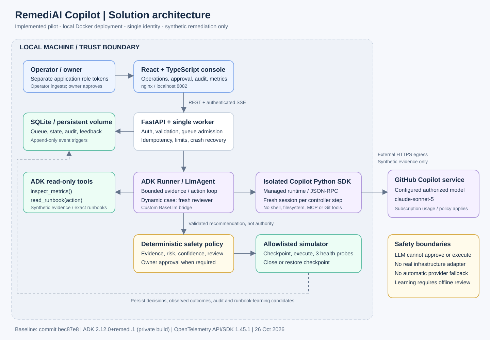
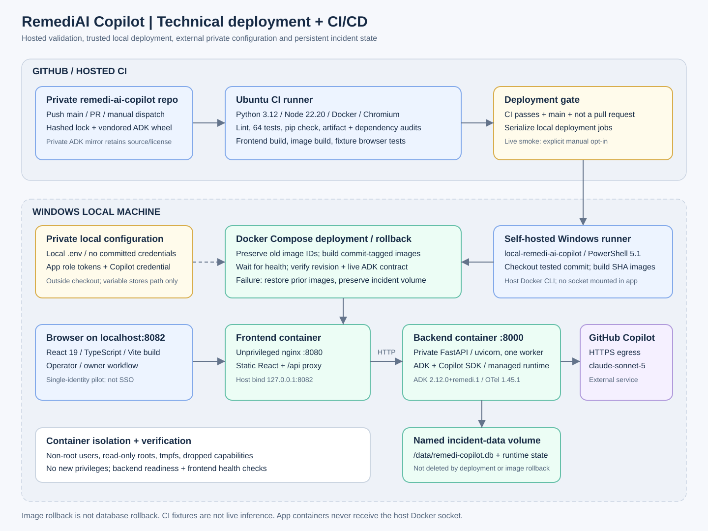
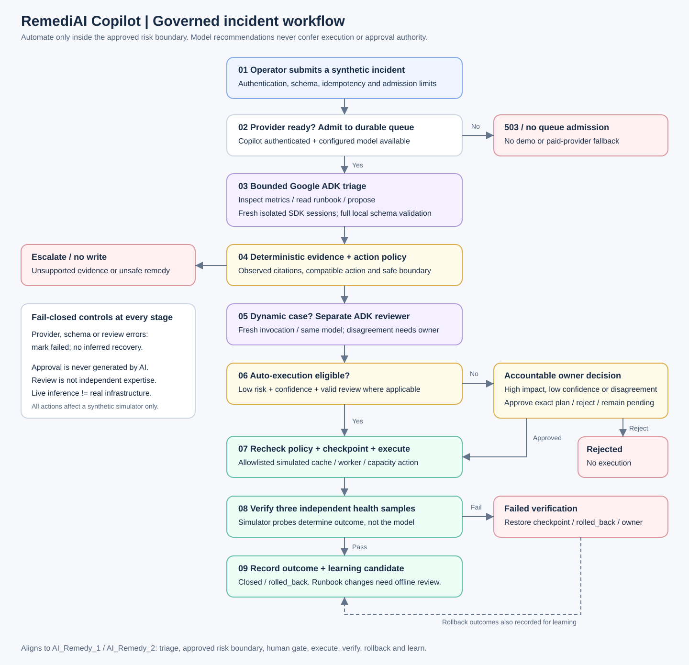

01 / Solution architecture
System components, data flows, trust boundaries and the separation of model recommendations from deterministic authority.


02 / Technical deployment + CI/CD
Hosted Linux validation and gated Windows deployment to Docker Desktop, with SHA-tagged images, health checks and rollback.


03 / Governed incident workflow
Evidence-based triage, optional reviewer, owner approval, simulated execution, independent recovery verification and reviewed learning.
